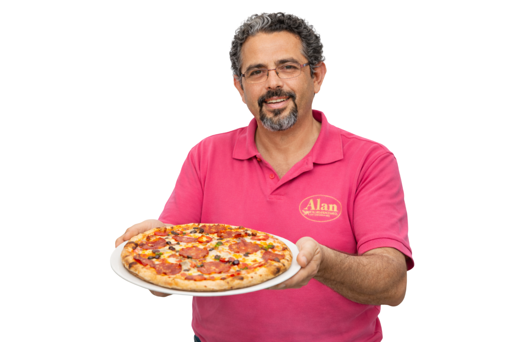
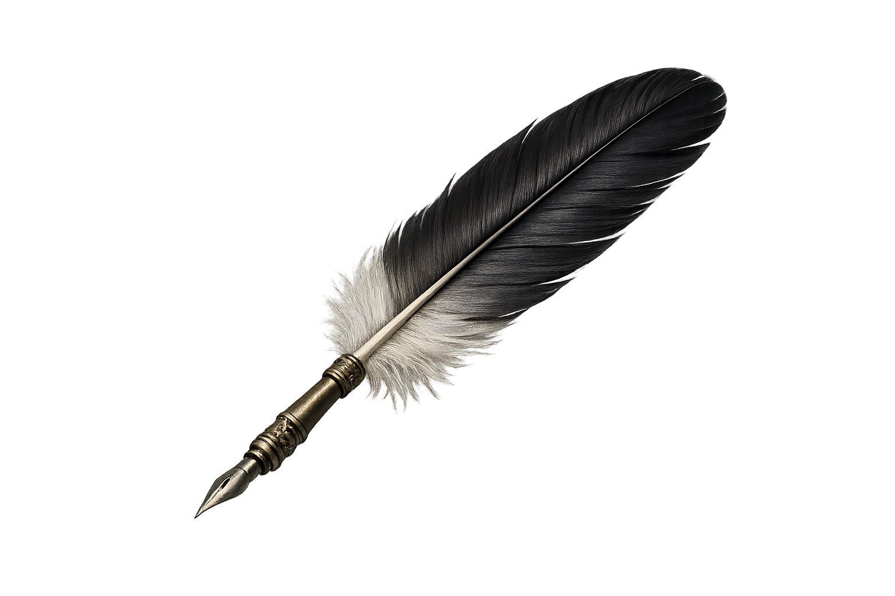
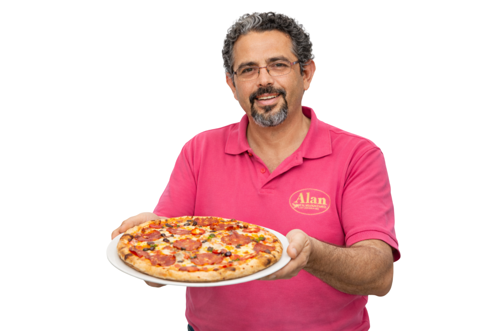
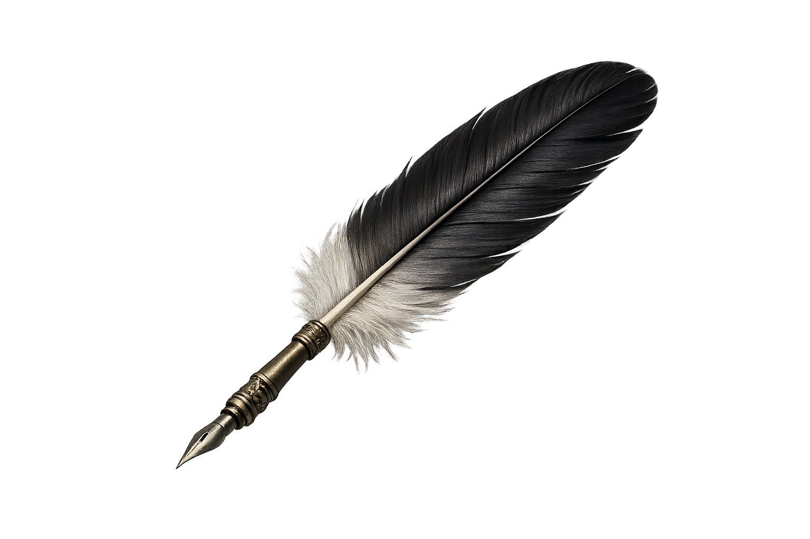

Willkommen im Bistro L’incontro
Seit 2008 hat Ali dieses Restaurant
mit viel Herz und Leidenschaft geführt.
Gutes italienisches Essen,
frische Zutaten und echte Gastfreundschaft
standen für ihn immer an erster Stelle –
und genau das spürt man hier bis heute.
Was damals begonnen hat,
führen wir heute genauso weiter:
ehrliches Essen, eine familiäre Atmosphäre
und Qualität, die man schmeckt.